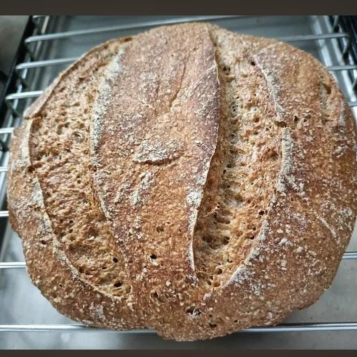
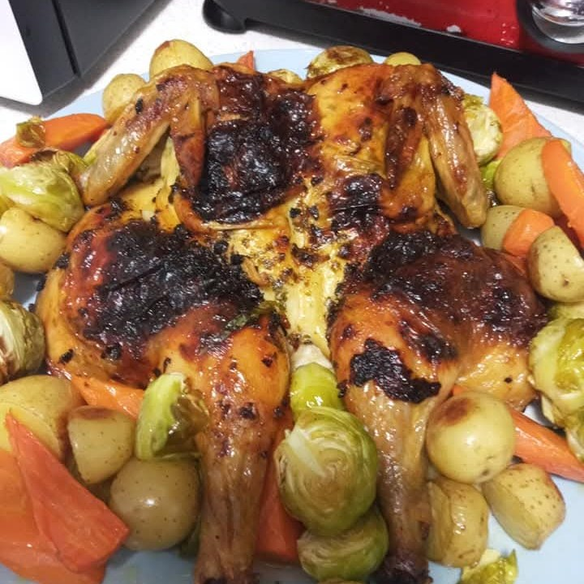
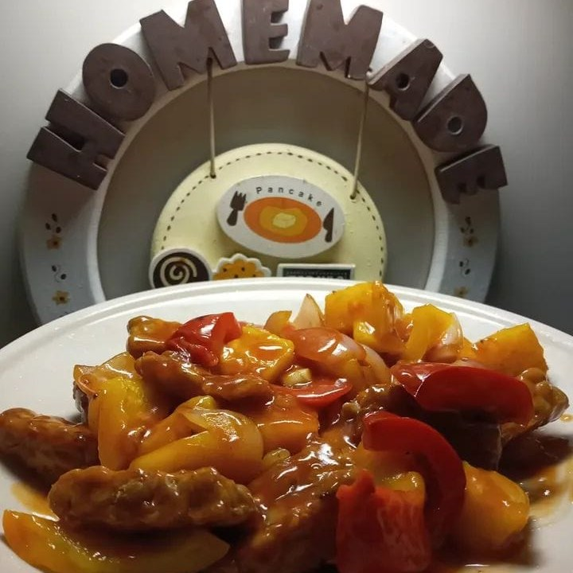
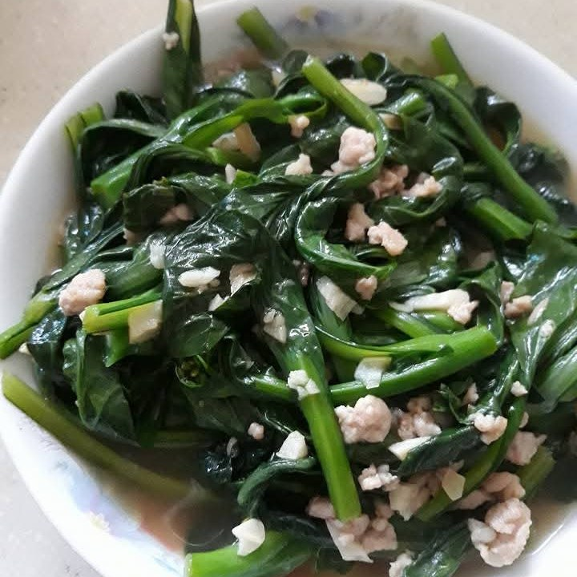
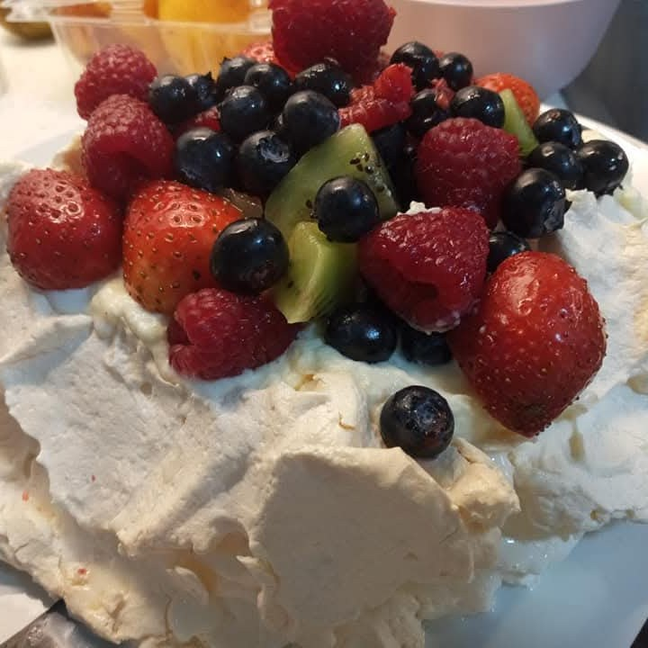

Filipino · 46 · Children, cooking & household
Two employers have written recommendations for her, including the family who kept her for nine years. Fourteen years in Singapore across four households. She cooks for a mostly vegetarian family, follows new recipes, and bakes her own bread.
“Daisy has proven to us to have a hard working, honest, responsible and positive personality. She has easily adjusted to our family needs and is an easy person to get along with. I am a stay-at-home mum and I feel very comfortable to be at home when Daisy is around.”
— her employer from 2021 to 2023, in a written reference
Trust signals
Our strongest trust signal — families she worked for, recommending her directly. Both letters are from previous households, not the family she is with now. We arrange the call once a family has met her and is proceeding seriously.
At a glance
The essentials
Available from
Available now. Transfer within Singapore.
Nine years, one household
September 2012 to April 2021 — a family of four in a four-room flat. She also had the daughter’s baby for nearly two years, and the family’s small dog.
Where she is now
Since January 2023 — an Australian family with children of three and six: the children, the household, Western and local cooking, and the marketing.
Children she has cared for
A baby from newborn for nearly two years. Children of three and six now, nine and four before that, and a household with three young children in 2021.
Cooking
Chinese, some Western, and vegetarian food. One employer wrote that she cooked nearly every meal for a mostly vegetarian family of four and made the lunchboxes. She bakes her own bread. Photographs further down this page.
Elderly care
2009 to 2011 in Kuwait, with an elderly woman — walking, bathing, her medicines and her meals. She finished that contract.
Getting around
Public transport, and Google Maps when she is unsure. Her employer wrote that she was confident taking the child anywhere in Singapore.
Best fit
A family who want the cooking taken seriously and the children in the same pair of hands. She works best with a clear routine and little supervision, which is how both of her referees describe her.
Two signed letters: one from the family she was with from 2021 to 2023, one from the family who kept her nine years.
From the 2021–2023 household. She writes that they were only letting her go because they were relocating out of Singapore, and that Daisy “has proven to us to have a hard working, honest, responsible and positive personality”.
On the children: “Daisy is very competent with younger children — my daughter is a toddler. She loves to play with them and go on outings. She is confident in taking my child anywhere in Singapore and I feel very safe when she is in Daisy’s care. Both my daughter and I feel safe when she is in Daisy’s care — she’s responsible and good at following instructions when caring for children.”
On the house: “Daisy is proactive and doesn’t need many instructions. She is hardworking and has a positive attitude. On family outings it was such a huge help to always return home to a clean house and delicious meals.”
On the cooking: “Daisy cooks pretty much every meal for our family of four and prepares lunch boxes for my older son. We are a 80% vegetarian family and Daisy has adapted well to our culinary needs. She can easily follow recipes and has no issues in learning new ones. She has learnt many new recipes during her time with us and is confident in the kitchen.”
And on how they worked together: “Daisy is good at managing her own time and finding a work-life balance. We never felt the need to give her a curfew, as we trust her and see her as a responsible adult being. Daisy will be greatly missed in our family and we wish her all the best.”
From the employer of 2012 to 2021. “She has been working for our family and done a good job. She is diligent in her work. She takes pride in her work. She cooks well and requires minimum supervision. She is also a fast learner and gets along well with everyone. I would like to recommend Daisy to find a family who can give her better salary, and I am sure she would be a great asset for that family.”
Four households in Singapore since September 2012, and two years in Kuwait before that.
2009 to 2011 — Kuwait. An elderly woman who needed help walking and bathing, her medicines and her meals. She finished the contract.
September 2012 to April 2021 — eight years and seven months. Her first Singapore household: a family of four in a four-room flat — the parents and two daughters in their twenties. One daughter married and had a baby, and Daisy Ann had that child from newborn for nearly two years. There was a small dog in the house for her first three years. It ended because the household no longer needed a helper, with everyone out at work.
April to November 2021 — seven months. An Italian-Irish household of five in a three-storey house, with children of seven, five and two. She was doing the whole house on her own and a fourth child was on the way, and she asked to move.
November 2021 to January 2023 — fourteen months. A family of four with children of nine and four. It ended when the family relocated out of Singapore, and they wrote her the longer of her two references.
January 2023 to now. An Australian family with children of three and six: the children, the household work, Western and local cooking, and the marketing. Her record carries it as cooking, general household and the care of an infant, toddler and child.
Where she’d suit next. A household with children and a kitchen that matters. She has had a baby from newborn, toddlers, and school-age children in turn; she cooks Chinese, some Western and vegetarian food, bakes her own bread, and does the marketing. She is comfortable with a dog in the house, and both of her referees describe someone who gets on with the day without being told.
Her employment record, both written references and her full work history are available to interested families, with her consent.
Her own photographs, from the households she has cooked for.





Tell us a little about your household and we’ll be in touch within 1–2 business days. We’ll only move forward if it feels like a genuine fit.